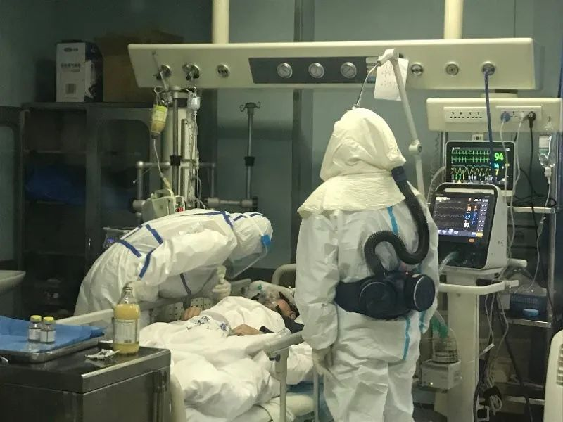

解剖遗体法医刘良：如果患者气道粘液没化解，给氧会起反作用
原文链接 备份链接 *************▲*************刘良和他的团队，右二为刘良。 （校方供图/图） 全文共1927字，阅读大约需要5分钟。 临床治疗上，如果粘液没有被化解的情况下给患者单纯给氧，可能达不到目的，有时 …

新冠肺炎逝者遗体解剖已完成11例，据首份观察报告，肺部深处多粘液的情况，对临床治疗的化痰、排痰方案决策有帮助，对多器官的深入影响仍待进一步检测

2020年2月初，武汉金银潭医院隔离病区内，医护人员正在给新冠肺炎患者做治疗。武汉金银潭医院/供图
文 | 《财经》记者 辛颖 王小
编辑 | 王小
一如当初十日之约，首份新冠病毒肺炎逝者遗体解剖报告在2020年2月24日提交，从解剖到成文，华中科技大学法医系刘良教授及其团队如期完成，并于2月28日发布《新型冠状病毒肺炎死亡尸体系统解剖大体观察报告》(下称《报告》)预印版，计划将刊登在《法医学杂志》2020年2月第36卷第1期。
虽然首份报告仅就1个病例进行肉眼观察结果分析，但实际上刘良团队已在2月24日完成3例遗体解剖的初步病理诊断，并同步向临床医生公开，目前已经为临床治疗方案提供帮助。
研究结果显示：新冠肺炎主要引起深部气道和肺泡损伤为特征的炎性反应，肺部纤维化及实变没有SARS导致的病变严重，而渗出性反应较 SARS 明显，对于心肌及心外膜、肾脏、脾脏、消化道器官、脑部是否存在与病毒感染相关的损害表现有待进一步研究。
湖北第三人民医院呼吸科主任王新卫向《财经》记者介绍，我们现在将患者分为早期、进展期和危重症阶段，尸检结果提示我们在进展期就要注意患者肺部分泌物的及时排除，尽量减少患者发展到下一阶段。
截至2月25日，遗体解剖共计完成11例，其中华中科技大学团队负责9例，上海瑞金医院病理团队完成2例。而是否会产生更多有助于临床治疗的信息，值得期待。
“目前《报告》看是大体检查结果，看来确实是肺部炎症损伤严重，有纤维组织及粘液产生，可能镜下诊断还没出来，还得等。”一位北京病理科医生告诉《财经》记者。
将治疗预警提前
随着对新冠病毒肺炎逝者遗体解剖进入公众视野，其研究结果也备受期待。
《报告》发布的当天上午，一则消息在网络流传，“武汉市新冠肺炎死亡人数快速减少，原因是病患遗体解剖发现死亡者肺部出现大量痰栓，痰栓最终致人缺氧而死。昨天开始，急救改用吸痰机。”
然而，这一信息从临床实践到治疗理论都被证实站不住脚。一直在武汉某三甲医院负责重症患者救治的医生回复《财经》记者，临床没有将呼吸机改换吸痰机。
与湖北救治一线保持沟通的复旦大学呼吸病研究所白春学教授向《财经》记者分析，化痰与呼吸机使用并不冲突，服用化痰药就不会痰液聚集，同时使用呼吸机和化痰药，就好像人可以既喝水，也可以喝茶，根本没必要使用吸痰机。
据介绍，专家们从遗体检验大体观判断，本例死者肺部损伤明显，炎性病变（灰白色病灶）以左肺为重，肺肉眼观呈斑片状，可见灰白色病灶及暗红色出血，触之质韧，失去肺固有的海绵感。切面可见大量黏稠的分泌物从肺泡内溢出，并可见纤维条索。复阅患者入院第20天CT 片，见双肺多发斑片状磨玻璃影，可见空气支气管征，以左侧为重，双下肺可见纤维条索影。遗体检验肉眼所见与影像学改变分布情况相符合，且病变进一步进展。
刘良在报告中指出，考虑影像学所见磨玻璃状影与肉眼所见肺泡灰白色病灶对应，新冠肺炎主要引起深部气道和肺泡损伤为特征的炎性反应。
首例报告的遗体来自一位85岁的男性患者。2020年1月某日，该患者以“多发性脑梗死”入院。入院时无发热、咳嗽等症状。入院10天后出现喉咙发痒及发热，CT检查示：双肺散在少许小斑片状感染病灶，气管内分泌物可能，建议结合临床实验室检查完善鉴别诊断。
入院后第13天，患者经新冠病毒核酸检测为阳性，确诊感染。入院后第20天复查CT示：患者双肺散在斑片状感染病灶，较前进展，考虑“病毒性肺炎”，原气管腔内分泌物已消失。
入院后28天死亡，患者临床死亡原因诊断为“新型冠状病毒肺炎、呼吸衰竭”。死亡前三天，血氧饱和度下降至70%~80%，面罩吸氧，加大氧流量（40L/min，氧浓度60%），血氧饱和度上升至98%左右。
王新卫指出，由于呼吸机在正压给氧的时候可能会把黏液推得更深更广，会影响患者的供氧。因此，除使用化痰等辅助治疗，尤其是出现快速呼吸衰竭的，在需要使用呼吸机时，10-20分停止一次，可以通过咳痰等其他方式及时排出，并不会因此取消使用呼吸机。
此外，与SARS对比，此前由新冠肺炎死者尸体穿刺取样，获得的组织局部病理学改变提示，新冠肺炎病理特征与SARS和中东呼吸综合征（MERS）冠状病毒引起的病理特征非常类似。
刘良在其报告指出观察，肺部纤维化及实变没有SARS导致的病变严重，而渗出性反应较 SARS 明显。考虑可能与此例患者从确诊到死亡仅15天，病程较短有关，有待更多系统尸体检验资料及组织病理学验证。
更多病理结果待进一步分析
能否通过全面解剖，了解新冠病毒对各脏器的影响也是尸检备受关注的原因之一。但这也受患者的基础疾病影响。
如《报告》中，患者临床资料显示存在冠心病、心绞痛病史，因此虽然解剖见心包腔内中等量淡黄色清亮液体，心外膜轻度水肿，心肌切面呈灰红色鱼肉状，但对心肌及心外膜是否存在与病毒感染相关的损害表现有待进一步研究。
此例消化系统损伤情况肉眼观也不明显，值得一提的是，小肠呈节段性扩张与狭窄相间（类似串珠状），为个例或普遍表现需结合更多尸体检验情况。脾肉眼观未见明显异常，是否存在病变需进行组织病理学研究。肾呈颗粒性固缩肾外观，考虑与基础疾病有关。
关于神经系统，肉眼观见脑水肿，大脑皮质轻度萎缩，结合临床资料，患者年龄大，有多发性脑梗死及脑血管病后遗症，脑肉眼观未见感染特异性表现，病毒是否侵犯中枢神经系统有待组织病理学验证。
而对神经系统的影响也受到其他临床医生的关注。武汉协和医院在22日发表一项回溯性研究，发布在预印本平台medrxiv。对2020年1月16日至2月19日在华中科技大学协和医院三家定点医院就诊的所有新冠肺炎患者的资料进行分析。
一个新的疾病，所有的器官都要观察到。预计研究人员将做镜下诊断，常规需要1个月左右，“现在也得10天，有可能还要做免疫组化等。因为是感染标本，可能需要固定时间延长，杀灭病毒后才能进一步取材，也耽误时间。”上述北京病理医生分析。
遗体解剖要经过固定，取材，制片，镜下观察等一系列工作，是不能随意缩短时间的，10天完成《报告》，是工作人员加班加点完成的。”制作过程缩短时间，会影响切片质量，影响看片，诊断，所以不能着急。”上述北京病理医生说。

▲点击图片查看更多疫情报道
责编 | 黄端 duanhuang@caijing.com.cn
本文为《财经》杂志原创文章，未经授权不得转载或建立镜像。如需转载，请在文末留言申请并获取授权。
原文链接 备份链接 *************▲*************刘良和他的团队，右二为刘良。 （校方供图/图） 全文共1927字，阅读大约需要5分钟。 临床治疗上，如果粘液没有被化解的情况下给患者单纯给氧，可能达不到目的，有时 …
原文链接 备份链接 **微信公号“央视新闻”** 自2月16日凌晨完成第一例新冠肺炎逝者遗体解剖之后，华中科技大学同济医学院法医系教授、湖北省司法鉴定协会会长刘良与其团队至今已经获得了9例逝者的病理样本。日前，央视记者就新冠肺炎逝者遗体解 …
原文链接 备份链接 记者/韩谦 魏晓涵 *编辑/石爱华宋建华* 进行病理解剖的刘良团队 经历了一个多月的等待后，华中科技大学同济医学院法医病理学教授刘良带领的团队，于2月16日凌晨3点50分，完成了第一例新冠肺炎死亡病例的尸体解剖。 截 …
原文链接 备份链接 很多时候，流调人员不像医生，患者会主动尽可能多地给医生提供有用信息。流调人员说，希望市民在经历过疫情之后，能够了解到流调的重要性，为他们将来的工作提供更多便利。 记者 | 应 琛 当大家对新冠肺炎“零号病人”议论纷纷之 …
原文链接 备份链接 从2月7日到现在，一方面大家的活动越来越丰富，另一方面由于轻症患者比较多，人们病情都慢慢恢复。所以，我看到每个人脸上的笑容都变多了。 口述 | 余 毅 整理 | 王仲昀 这一个月终于要过去了。 2月21日上午，在等待几 …